Name Data Sources for Semantic Enrichment
Table of Contents
- 1. Introduction
- 2. Name Sources
- 2.1. Wikidata
- 2.2. Freebase
- 2.3. DBPedia
- 2.4. VIAF
- 2.5. ISNI
- 2.6. Getty ULAN
- 2.7. Yago Knowledge
- 2.8. British Museum
- 2.9. LOD Cache
- 3. Comparing Sources
- 4. Coreferencing
- 4.1. VIAF Coreferencing
- 4.2. VIAF vs Wikidata Coreferencing
- 4.3. Wikidata Coreferencing with Mix-n-Match
- 4.4. Downloading Coreferences from Mix-n-Match
- 4.5. Wikidata Authority Identifiers
- 4.6. British Museum Coreferencing
- 4.7. Wikidata Correlation Ids on DBpedia
- 4.8. Finding Errors in Authorities through Wikipedia/Wikidata
- 5. Conclusions
- 6. References
1 Introduction
This paper analyzes potential data sources for semantic enrichment of names (Person/Organization NER).
- It is part of Europeana Creative deliverable D2.4
- See list of associated files on https://github.com/VladimirAlexiev/VladimirAlexiev.github.io/tree/master/CH-names
- You could read there, but use http://vladimiralexiev.github.io/CH-names/README.html for better reading (the files are linked from the text below)
Highlights:
- The best datasets to use for name enrichment are VIAF and Wikidata
- There are few name forms in common between the "library-tradition" datasets (dominated by VIAF) and the "LOD-tradition datasets" (dominated by Wikidata), see 3.2 and this interactive Venn diagram: ./cranach-venn.html
- VIAF has more name variations and permutations, Wikidata has more translations: 3.1
- VIAF is much bigger (2.4.2): 35M persons/orgs. Wikidata has 2.7M persons and maybe 1M orgs
- Only 0.5M of Wikidata persons/orgs are coreferenced to VIAF, with maybe another 0.5M coreferenced to other datasets, either VIAF-constituent (eg GND) or non-constituent (eg RKDartists)
- A lot can be gained by leveraging coreferencing across VIAF and Wikidata: 4.2
- Wikidata has great tools for crowd-sourced coreferencing: 4.3 and following
- The best approach is loading them to a local repository in order to ensure levels of service
1.1 Name Data Sources for Semantic Enrichment
Semantic enrichment in Europeana is a very difficult task due to several factors:
- Varying metadata quality across different collections, sometimes including misallocation of metadata fields
- Varying metadata formatting practices across different collections, e.g. some collections indicate the role of a creator in brackets after the creator name
- Lack of accurate language information
For these reasons, we decided to focus on Person & Institution enrichment (person Named Entity Recognition), which in itself is an ambitious task.
Historic people are often referred to by many names. For successful semantic enrichment it's important to integrate high-quality and high-coverage datasets that provide name info. There is a great number of Name Authority files maintained at libraries, museums and other heritage institutions world-wide, e.g. VIAF, ISNI, Getty ULAN, British Museum. Linked Open Data (LOD) datasets also have a plethora of names, e.g. in DBpedia, Wikidata and FreeBase. We analyze some of the available datasets in terms of person coverage, name coverage, language tags, extra features that can be useful for enrichment, quality.
We also analyze the important topic of coreferencing, i.e. how connected the sources are to each other.
Our investigation follows a hands-on approach, with detailed descriptions of access methods and tools that we used. A number of accompanying files are provided at http://vladimiralexiev.github.io/CH-names and referenced below.
1.2 RDF-based Gazetteers and Data Integration
Enrichment is most often based on large and efficient lookup structures called gazetteers. Ontotext's experience with commercial semantic enrichment is that the best way to make gazetteers is:
- Acquire a number of data sources, converting to RDF if needed
- Load the data sources to a single repository, thus integrate them in semantic format. Many of the sources have SPARQL endpoints or proprietary APIs that are very useful for investigation, but usually unworkable for production (see "LOD Cache" below)
- Assemble gazetteers "dynamically" from the RDF sources.
- In the simplest form this can be done with custom SPARQL queries that extract the data needed for a particular enrichment application. The gazetteer needs to be refreshed periodically when the RDF data changes
- In more sophisticated forms this could involve dynamic synchronization of gazetteers with the RDF repository upon change
1.3 Data Source Dimensions
We investigate the sources along several dimensions:
- Dataset description: where it came from, past evolution, future outlook. All these non-technical aspects are important factors in deciding whether and how to use the source
- Agent coverage: number of people/institutions. For some sources we use published reports and summaries, for others we use recent counts and analyses we performed
- Name coverage: number of name forms for a well-known person (found in all sources), then analyze set intersections and unique contributions
- Access: we describe how the source can be accessed: web and API access for exploration, bulk download for RDF integration, update rate, etc
- Language coverage: we provide overall info about the number of languages covered, but have not performed precise counts
- Extra features that can be useful for enrichment (see next section)
- Quality and accuracy of the various data elements
1.4 Extra Features
In addition to person names, the following features can be very useful for disambiguation:
- Description In addition to person names, most data sources have a person description. It can be useful for contextual disambiguation, e.g. to distinguish a painter from a sculptor by the type of object. It can vary between:
- Short standardized description as provided by ULAN, e.g. "German painter, draftsman, and printmaker, 1472-1553"
- Short unstandardized description as provided by Wikidata, e.g. "German Renaissance painter and printmaker in woodcut and engraving"
- Short or long abstract as provided by DBpedia. The long abstract is the beginning of the article until the first heading. The short abstract is the first couple of sentences.
- Quite long biographies as provided by the British Museum (only for well-known artists)
- Life years These are useful to filter out by date range. e.g. a 20-century painter cannot be the author of a 16-century painting. But life years in CH are often subject to uncertainty, usually expressed with qualifiers like "circa" (c), "early/mid/late Nth century", "floruit" (fl). In such cases rule-of-thumb defaults may be employed, e.g. "a person cannot live for more than 100 years", "a person is not creatively active before 15 and after 90 years of age", etc
- Imprecision: the exact year is not known, e.g. "early 16th century". This can be translated to a range of years
- Ambiguity: different opinions about the year coming from different sources. In such cases, all opinions are recorded, together with source
- "Floruit": the birth and/or death date is not known, only a range when the person was active
- Language tags Whether the source has reliable language tags for the names. They can help restrict the candidate names, but only if the text to be enriched also has reliable language info. Unfortunately there is no such info in Europeana
- Popularity Often the "popularity" of an entity has good correlation to the probability of its appearance in text, thus is a good way of ordering candidate matches. The question is how to compute "popularity". For cities, a good approximation is the population. For agents, we could use the connectedness and centrality of the agent in an RDF graph, e.g.:
- Number of paintings on Wikimedia Commons
- Number of "influences" connections on DBpedia
- Number of relations in ULAN
- Ontotext GraphDB provides a simple measure called RDFRank, which is an implementation of PageRank for RDF graphs.
1.5 Running Example: Lucas Cranach
We follow an example-driven approach, analyzing name coverage for Lucas Cranach the Elder.
Lucas Cranach is one of the most important painters of the German Renaissance. His name evolved over time. He was born "Lucas Maler": this surname means "painter" and denoted the profession of his father, not his ancestry. Later his surname was "changed" to Cranach, after the name of his birthplace (Kronach in upper Franconia), another custom of the times. (Some Italians called him "Lucas Tedesco", another geographically-derived name). When his son was born he also became a painter (though a less prominent one): then art historians started referring to him as Lucas Cranach the Elder (I), and to his son as Lucas Cranach the Younger (II) to avoid confusion. German Wikipedia even refers to Lucas Cranach III, though there are no known works by this painter.
Such name evolution is quite typical of historic persons, leading to a large number of names.
2 Name Sources
2.1 Wikidata
Wikidata is an open crowd-sourced database of facts. Wikidata is intended to provide a central data store for all Wikipedias, similar to Wikimedia Commons providing a central media store. The hope is that such central fact store will take care of an important problem in Wikipedia language editions: that articles about the same entity in different languages may include different claims about the same property, in terms of value, sources, timeliness ("as of"), etc.
Wikidata started with mass-import of information from Wikipedia: inter-language links (corresponding to owl:sameAs statements between DBpedia language editions), labels, basic data such as birth/death years, coordinates, etc. New data is added all the time, both by human editors and automated processes (bots). The quality of data is higher since it's a centralized database ("single source of truth" for each claim) and has stricter editorial process (while each Wikipedia language edition uses its own properties and editorial policies).
2.1.1 Wikidata Access
We can access the info about Cranach in various ways:
- Per-entity web page: http://www.wikidata.org/entity/Q191748
- Per-entity semantic format. We can request the entity with content negotiation (Accept header), or with the corresponding file extension. Turtle is the easiest to read (the names use real Unicode chars), NTriples may be easier to compare (it's line-oriented), JSONLD may be easiest to process in applications.
curl -L -Haccept:application/rdf+xml http://www.wikidata.org/entity/Q191748 > cranach-wikidata.rdf curl -L -Haccept:text/turtle http://www.wikidata.org/entity/Q191748 > cranach-wikidata.ttl curl -L -Haccept:text/plain http://www.wikidata.org/entity/Q191748 > cranach-wikidata.nt curl -L -Happlication/ld+json http://www.wikidata.org/entity/Q191748 > cranach-wikidata.jsonld
- This includes only labels and Wikipedia (inter-language) links. Other statements are not yet available by Wikidata entity access
- To get the best of both worlds (line-oriented and real Unicode chars), reprocess the Turtle with Jena rdfcat. (Note: rdfcat does not produce proper Unicode from the NTriples file):
rdfcat -out ntriple cranach-wikidata.ttl | sort > cranach-wikidata1.nt
- Reasonator application, which collates a lot of useful info in a pretty way: http://tools.wmflabs.org/reasonator/?&q=191748
- Wikidata API (Reasonator is built using it)
- DBpedia SPARQL endpoint: http://dbpedia.org/sparql.
- In DBpedia the entity URL is rewritten to http://wikidata.dbpedia.org/resource/Q191748
- You can get the info with a query like this, since the rewritten URL does not resolve
describe <http://wikidata.dbpedia.org/resource/Q191748>
- Compared to Wikidata there may be some more info (especially for less popular items), but it's less precise/accurate
- It's not clear where this data came from, or how often it is updated
Wikidata also provides a number of powerful tools that are described next
2.1.1.1 Wikidata Query
Wikidata Query (WDQ) is a very peculiar but very powerful query language. The implementation caches large amounts of key data, so query answering is very fast.
- WDQ API: http://wdq.wmflabs.org/
- WDQ Documentation: http://wdq.wmflabs.org/api_documentation.html, with executable examples
- WDQ editor UI: http://wdq.wmflabs.org/wdq/, with editable examples
You can do a lot of things with WDQ. Please take a look at the links above, and try the following examples. You can load the query into the WDQ editor
- number of Humans: P31 "instance of" is Q5 "human": 2690452
http://wdq.wmflabs.org/api?q=CLAIM[31:5]&noitems=1
- number of subclasses of Human: start from Q5, go backward along P279 "subclass of": 121 (some of them quite ad-hoc and weird)
http://wdq.wmflabs.org/api?q=TREE[5][][279]&noitems=1
- number of instances of Human or subclasses thereof: 2690504 (it's pretty good that there are almost no instances of the ad-hoc classes)
http://wdq.wmflabs.org/api?q=CLAIM[31:(TREE[5][][279])]&noitems=1
- number of items with VIAF id (P214): 504912
http://wdq.wmflabs.org/api?q=CLAIM[214]&noitems=1
- number of Humans (Q5) with VIAF id (P214): 489705 (97% VIAF items, but only 18.2% of all Humans)
http://wdq.wmflabs.org/api?q=CLAIM[31:5]+and+CLAIM[214]&noitems=1
- non-Humans with VIAF id: returns nothing, which is strange/inconsistent
http://wdq.wmflabs.org/api?q=NOCLAIM[31:5]+and+CLAIM[214]
- number of Humans with missing birth date (P569): 1049808 (39%)
http://wdq.wmflabs.org/api?q=CLAIM[31:5]+and+NOCLAIM[569]&noitems=1
You can paste the query into the WDQ editor to understand it better:
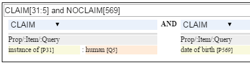
2.1.1.2 Wikidata AutoList2
AutoList2 (http://tools.wmflabs.org/autolist/) is a powerful tool that allows you to:
- Query any-language Wikipedia by category
- Query Wikidata by WDQ
- Query Wikidata labels (prefLabel), aliases (altLabel) by exact or substring
- Adjust with a manual list
- Combine these with boolean connectives
- Bookmark or download the results
- Apply any claims (statements) to the final result
Below is an example: we take all articles on bg.wikpedia in category "Български футболисти" (Bulgarian soccer players), look for ones with missing claim "sport=association football" and add such claim. (This includes non-professional soccer players, e.g. Bulgarian prime minister Boyko Borissov.) This tool allows even people without MediaWiki bot programming experience to do batch-updates.
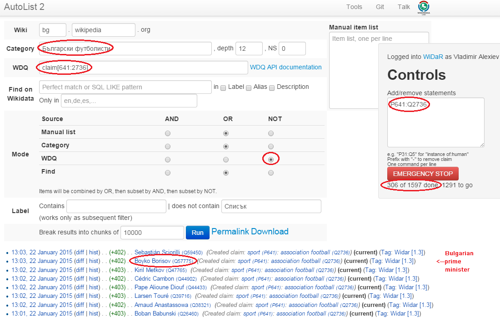
Another example:
- List of all paintings (first 100). WDQ query
claim[31:3305213]. Total results: 34147 - List of paintings with image (on Commons)" (first 100). WDQ query
claim[31:3305213] and claim[18]. Total results: 16139
2.1.1.3 Wikidata Generic Tree
Wikidata Tree (http://tools.wmflabs.org/wikidata-todo/tree.html) allows you to view the class hierarchy (or any other property tree), e.g.:
- Subclasses of Person (560): http://tools.wmflabs.org/wikidata-todo/tree.html?q=Q215627&rp=279
- Note: Wikidata uses "human" for people, and "person" for anything that can have a personality, e.g. deity, artificial agent, etc
- Subclasses of Location (3234): http://tools.wmflabs.org/wikidata-todo/tree.html?q=Q17334923&rp=279 The class hierarchy is currently quite a mess. Luckily, the direct types used for Humans and Organizations are not too many, and are ok
- Locations in Cambridgeshire as a d3 star tree: http://tools.wmflabs.org/wikidata-todo/tree.html?q=23112&rp=131&method=d3
2.1.2 Wikidata Stats
- Wikidata Statistics shows the number of items (Content pages) and editorial statistics
- Stats tables and charts shows the growth since Feb 2013
- Year in Review shows a breakdown of items per number of labels and number of statements comparing Jan 2014 and Jan 2015
- Live stats provides up to date information on Wikidata size, number and percentage of statements of different kinds, and the WDQ clause used to access this kind of data element
| data element | count | percent | clause |
|---|---|---|---|
| items | 13116549 | ||
| labels | 63086181 | ||
| sitelinks | 41936042 | link | |
| strings | 12834528 | 23.5 | string |
| monolingual_strings | 4255 | 0.0 | |
| times | 2786663 | 5.1 | between |
| coordinates | 1893742 | 3.5 | around |
| connections | 36772502 | 67.4 | claim |
| quantities | 294977 | 0.5 | quantity |
| total statements | 54586667 | 100.0 |
Comparing the Live numbers to the triples in the next section:
- Labels=63M would leave 81.7M to descriptions & aliases, but in our opinion these are fewer than the labels
- Sitelinks=42M is only 30% of the number reported above? We don't have the correct count, since WDQ doesn't return accurate results for empty
link[]ornolink[]clauses. 4.4M items have link to enwiki or dewiki, and 8.7M don't have such links: we can estimate that 6M items have any wikilink, and the other 7M don't - Total number of statements (54M) doesn't even reach the number of "simple statements"
- The percentage breakdown of statements gives us a useful overview of the kind of data in Wikidata at present
2.1.3 Wikidata Download and RDF Counts
Wikidata provides comprehensive RDF data dumps: http://tools.wmflabs.org/wikidata-exports/rdf/exports/
- There is some discussion of implementing Incremental dumps (similar to http://live.dbpedia.org), but such are not yet available
- The full dumps are made quite often (monthly or bimonthly)
- Note: the interactive query tools described above work with a delay of 5-15 minutes compared to the live data
| wikidata-?.nt.gz | triples | size | description |
|---|---|---|---|
| terms | 144702568 | 1.2G | item labels, descriptions, aliases (in all languages) |
| sitelinks | 140980119 | 1.0G | links from Wikidata to Wikipedia and other MediaWiki project sites |
| simple-statements+ | 81086253 | 607.0M | one triple per statement: references omitted, statements with qualifiers not included |
| properties+ | 74510 | 1.4M | property definitions, including datatypes, labels, descriptions, aliases |
| taxonomy+ | 335334 | 1.5M | class hierarchy: "subclass of" with no qualifiers -> rdfs:subClassOf (1) |
| instances+ | 12331117 | 52.6M | class membership information: "instance of" with no qualifiers -> rdf:type |
| statements | 220633163 | 2.9G | statements/claims, complete with references and qualifiers |
(1) And items used as target of "subclass of" or "instance of" -> owl:Class
Wikidata statements (claims) may carry complex associated information in qualifiers, such as dates of applicability, source references, scope ("of"), etc. Such claims are exported to RDF in a complex way using reification: see [5] fig.3 and sec.3.2.
- The last file "statements" in the tabe above uses this complex modeling and is quite hard to work with.
- The files marked "+" are derived from "statements". They are quite simpler to work with, and also smaller.
2.1.4 Wikidata Coverage and Type Count
Ontotext has taken a recent count of all direct type ("instance of") RDF statements as of Dec 2014. The count files are on Gist
- There are 12331093 "instance of" statements. Wikidata has 13M items, so about 93% of all items have types (if we assume that only a small percent of the items have multiple types)
- There are 17875 classes with at least one instance, of which 6510 classes (36%) with at least 5 instances. The rest (64%) are a very long tail of items that are inappropriately used as classes, e.g. Indian Rhinoceros, Trumbull's Declaration of Independence, stud, meatloaf…
Specific classes that are useful for Person/Organisation Recognition:
- There are 2.7M (2662626) humans (matches the number reported by WDQ 2.1.1.1). This is fairly well focused, in that it collects a large proportion of all humans. There are a few exceptions, e.g. "minister", "table tennis player", "chess composer": these should be used as "occupation" while "instance of" should be "human".
- There are 5k families: 4569 noble family, 635 family, 465 Dutch noble family, 95 Belgian noble family, 35 clan
- There are some 22k literary characters: 11993 fictional character, 6963 fictional human, 2589 mythical character, 357 group of fictional characters, 159 fictional organization
- There are at some 215k organisations (not counting governments, city councils, etc). These are spread across a wide list of classes, so the totals below are not comprehensive and represent the possible minimum:
- 55k businesses: 47149 company, 2653 business, 2321 transport company, 885 public company, 718 corporation, 152 motorcycle manufacturer, 95 joint-stock company, 80 holding company
- 66k creative organizations 42179 band, 17904 radio station, 6187 newspaper, 1540 film production company, 843 theatre company, 22 theatre troupe
- 31k sports clubs: 26200 association football club, 5376 sports club, 184 American football club, 169 golf club, 154 country club
- 30k educational institutions: 16611 high school, 6396 school, 6321 university, 1062 Engineering College, 771 college, 301 research institute
- 20k non-profit organisations: 8929 organization, 7026 political party, 2853 association, 1052 nonprofit organization, 307 international organization, 246 charitable organization, 226 Esperanto organization, 144 political organization, 73 non-governmental organization
- 13k GLAM orgs: 438 art gallery, 83 art gallery; 882 library, 199 national library, 114 public library, 60 library, 28 Carnegie library, 27 academic library, 16 municipal library; 108 archive, 26 cantonal archives, 24 municipal archive; 6516 museum, 2176 art museum, 873 military museum, 569 museum ship, 513 historic house museum, 181 maritime museum, 151 musée de France, 119 aviation museum, 80 natural history museum, 68 science museum, 57 open-air museum, 48 railway museum, 37 local museum, 37 children's museum
In addition, the following types may be interesting:
- There are 40k+20k names: 40038 family name, 10320 given name, 5569 male given name, 4828 female given name.
- Due to the good efforts of the WikiProject "Wikidata names", these items provide valuable information on names themselves, e.g. variations, male/female correspondences, etc.
- This can probably be used for disambiguation or for generating language-specific name variants, but we have not investigated this topic
- Some 500k Creative Works: 154125 album, 140820 film, 59242 single, 51765 book, 31623 painting, 23055 scientific journal, 20032 song, 26789 video game, 18338 television program, 14838 short film, 13461 television series, 13098 silent film, 11876 periodical literature, 11297 episode, 6739 literary work, 6627 television season, 3488 sculpture, 2374 manuscript
- Some 110k heritage sites and monuments: 64806 Rijksmonument, 21076 Iranian National Heritage, 19696 scheduled monument, 1370 natural monument, 1150 World Heritage Site. This is expected to grow sharply for other countries as well.
The link given above also reports various defective classes.
2.1.5 Wikidata Names
Now we turn to checking what person names (labels) are provided in Wikidata.
- Preferred names are repeated as rdfs:label, skos:prefLabel, schema:name
- Alternate names are in skos:altLabel
Some of the original strings differed only by punctuation, eg
- Lucas Cranach "el Vell" vs Lucas Cranach el Vell vs Lucas Cranach, "el Vell"
- Lucas Cranach o Velho vs Lucas Cranach, o Velho
- Кранах Лукас Старший vs Кранах, Лукас Старший
The comma is often used to indicate last, first name inversion (a variant used "for indexing"). But we cannot rely on it:
- "Lucas Cranach, o Velho" shows the comma is sometimes used for other purposes
- "Кранах Лукас Старший" shows the comma is not consistently applied to name inversion
So we removed the punctuation chars ,." and ended up with 70 Wikidata name forms for Cranach: ./cranach-wikidata.txt. Examine the file to get a feel for the names.
2.1.6 Wikidata Languages
Wikidata includes names in a variety of languages.
- Lang tags are included for all languages, which is valuable
There are 57 unique lang tags, representing 44 languages and 13 language variants (e.g. de=German vs de-ch=Swiss German):
- af arz az be be-tarask bg br ca cs da de de-ch el en en-ca en-gb eo es eu fa fi fr ga hu hy it ja ka ko la lt lv mk nb nl nn pl pt pt-br ro ru sh sr sr-ec sr-el stq sv sw th uk zh zh-cn zh-hans zh-hant zh-hk zh-sg zh-tw
Only 3 of the language variants are truly distinct:
- zh-hans (Chinese Han Simplified) vs zh-hant (Chinese Han Traditional); be (Belorussian) vs be-tarask (Belorussian Taraskevica); sr=sr-ec (Serbian Cyrillic) vs sr-el (Serbian Latin)
The other language variants carry the same name string, e.g.:
- en, en-ca, en-gb; de, de-ch; pt, pt-br; zh, zh-cn, zh-sg
Observations on prefLabel and altLabel:
- There is a single prefLabel per language, following SKOS recommendations
- If the lang tag is taken into account, prefLabels and altLabels are disjoint
- But if you discount the lang tag, many of the altLabels are redundant. e.g. the German prefLabel "Lucas Cranach der Ältere"@de is repeated as altLabel for languages: lt lv nl pt stq sv.
- If you discount the lang tag, some of the prefLabels are also redundant
2.1.7 Wikidata Quality
Ontotext started using Wikidata in commercial applications since mid-Dec 2014, so we have a good feel about the quality of different data elements:
- Labels (names) are almost universally good
- Descriptions are sensible, though short, not authoritative, and often missing. Descriptions can be used only to disambiguate two items with the same name, but not to provide info about the item
- Linkage to different Wikipedias, Wikimedia Commons and other Wikimedia sites is always good
- Direct types ("instance of") are accurate for most of the entities in 2.1.4
- The set of properties is good. There are established property proposal editorial practices, based on a detailed proposal template followed by discussion and "voting". e.g. see properties for Authority Control). If after some time there are some supporters, but no or very few opponents, the property is created only by a property creator or an administrator. All discussion, decisions and their rationale are preserved. Defined property metadata is collected, including guidelines for use (e.g. on what items it should be applied), to which register or authority file it corresponds (if any), examples, format validation, uniqueness constraints, lists of known exceptions, etc. e.g. see GND identifier.
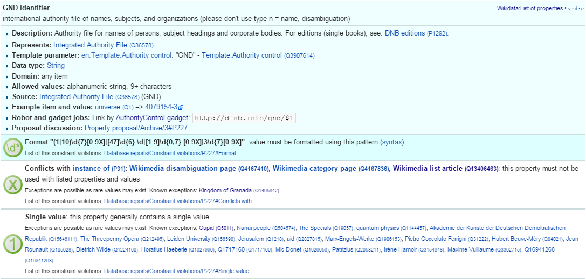
- These constraints are used to discover violations, which can drive coreferencing and merging/splitting investigations. e.g. see violations for GND identifier.
- Nevertheless, the overall property design is still in flux. e.g. there is a current proposal to eliminate a number of properties such as place/date of birth/death/burial and replace them with a generic "significant event" where details are provided with qualifiers.
- The class hierarchy is not good at all. The reason is that there is no editorial control over "instance of" and "subclass", so anyone can "make" a class. 63% of all classes have fewer than 5 instances. Play with the Wikidata Generic Tree 2.1.1.3 to see some very idiosyncratic classes, and a messed up hierarchy. Just a couple of examples:
- location> geographic location> facility> laboratory> lab-on-a-chip
- But "lab-on-a-chip" is a "device that integrates one or several laboratory functions on a single chip of only millimeters to a few square centimeters in size", hardly a "geographic location"
- location> storage> data storage device> audio storage device> album
- Any NER implementor will balk at "albums are locations". The everyday understanding of "location" as "place" is implemented as the subclass "geographic location". But nevertheless, an "album" is a creative work, and as such is a conceptual object that persists even after all its copies are destroyed. It's definitely not a "storage device"
2.1.8 Wikidata Synchronization to Wikipedia
Here we summarize some important points about the future data freshness of Wikidata
- Most Wikidata data (labels and links) was originally extracted from Wikipedia
- Wikipedia inter-language links are maintained in Wikidata, and are therefore authoritative in Wikidata
- The idea is that all Wikipedias will gradually transition to using data from Wikidata. However, this is still long coming
- Articles are added to Wikipedia all the time and names are added/edited, and similarly items are added and labels are edited in Wikidata. This can lead to desynchronization between the two
- There are bots that can transfer Articles and names from Wikipedia to Wikidata, but we have not investigated whether that happens regularly, especially for minor-language editions
- In the converse direction, we are not yet aware of tools to create a Wikipedia article stub from Wikidata
2.2 Freebase
Freebase is a collaboratively edited knowledge base, quite similar to Wikidata but with some more sophisticated features.
It was created by MetaWeb in 2007 and purchased by Google in 2010. It was used in the Google Knowledge Graph, together with Big Data provided by other companies. It's an important dataset that has been used in various applications, including commercial ones. In some sense it has provided inspiration to Wikidata.
On 16 December 2014, the Google Knowledge Graph Team announced that Freebase will be retired. The plan is to transfer the Freebase data to Wikidata (complementing with an application that can help editors to provide source references), stop write Freebase access at end-March 2015, and retire Freebase end-June 2015.
We did some investigation of Freebase, but following this announcement have decided that we won't be loading Freebase data.
2.2.1 Freebase Access and Names
- The Freebase URL for Cranach is http://www.freebase.com/m/0kqp0.
- An "almost Turtle" file is available at http://rdf.freebase.com/m/0kqp0, but some fixes are needed:
- Replace hex escape sequences \x in literals with unicode escape sequences \u00
- Replace dollar escapes in URLs with proper URL escaping
- Replace the quotes surrounding literals ("…") with triple quotes """…""" since some literals include quotes
- Freebase provides 32 names for Cranach (./cranach-freebase.txt), all with language tags
2.3 DBPedia
DBpedia is structured information extracted from Wikipedia and is the center of the Linked Open Data cloud. It was first released in Jan 2007 and has been continuously improved ever since.
2.3.1 DBpedia Stats
[1] presents very comprehensive statistics (p.12 table 2). The most recent version of these statistics is online. EN DBpedia being the first and largest language editions is taken as Canonicalized Data ("CD") (namespace http://dbpedia.org/resource; there is no namespace http://en.dbpedia.org/resource). Other editions are called Localized Data ("LD"). EN DBpedia provides the following number of entities:
- 1,445k persons
- 735k places
- 241k organizations
- 411k creative works: 123k music albums, 87k films, 19k video games…
- 252k species; etc
- 4,584k total
The total number across editions is harder to calculate since it depends on the degree of cross-language overlap popular entities appear in many editions, while purely "local heroes" may appear in a single edition. The numbers grow to:
- 1,471k persons
- 818k places
- 266k organizations
- 462k creative works
- 279k species; etc
Please compare to Wikidata Counts 2.1.4. We estimate that national editions add 15% more entities and perhaps 50% more labels (names)
2.3.2 DBpedia Quality
To understand the dynamics of DBpedia, one should understand raw properties vs mapped properties and classes, which is described really well in [1]. In brief, the process is as follows:
- Extracts all properties from all significant templates applied to the article. These properties are different for every language edition and are spelt in the national language, so they are called raw. Various heuristics are applied to recognize dates, numbers, links. No type information is applied here, which leads to some problems, e.g.:
- The name of the asteroid 1111 Reinmuthia is extracted as dbpprop:name 1111 (xsd:integer) because of a heuristic "if the field starts with an integer, assume it's an integer"
- A template field like
firstAscent = [[John Smith]], [[England|English]] expedition [[1 May]] [[1941] firstAscent = in [[Prehistory]]
will extract resources of variegated types: person, country, notable month-day, notable year, and historic period.
- Extracts a number of other characteristics, e.g. all used templates and categories, links, redirects, abstract (text before the first heading), geographic coordinates, etc
- Reads crowd-sourced class and property definitions and mappings from http://mapping.dbpedia.org
- Computes mapped properties from the raw properties and mappings. There is no editorial process in the mapping wiki, so there are significant defects, especially for languages other than English. This involves:
- Classes, e.g. non-sensical class like VicePresident
- Properties, e.g. DBpedia has no less than 86 "name" properties of which about half should be eliminated
- Mappings. The problems here are most extensive and vary from non-standard properties (e.g. sex="a" on bg.dbpedia to indicate Female) to mixing the predecessors/successors of a public official across several terms (pl.dbpedia)
Because domains & ranges are not used when extracting raw properties nor checked when mapping, this leads to data problems. e.g. the firstAscent template property (see above) is mapped to two:
firstAscentYear a owl:DatatypeProperty; rdfs:range xsd:gYear- Will get value
0001since that's the first number that appears (instead of 1941)
- Will get value
firstAscentPerson a owl:ObjectProperty; rdfs:range Person- Will get values
dbr:John_Smith, dbr:England, dbr:1_May, dbr:1941, dbr:Prehistory, of which only 1 is a Person!
- Will get values
2.3.3 DBpedia Class Errors
Mapping problems also lead to class errors. For example:
- dbr:United_Nations has type dbo:Country instead of dbo:Organisation
- On enwiki United_Nations uses Infobox_Geopolitical_organization
- The mapping Infobox_Geopolitical_organization has mapToClass = Organisation
- however the template Infobox_Geopolitical_organization on enwiki is redirected to Infobox_Country.
- So the mapping Infobox_Geopolitical_organization is disused, but the mapping wiki does not warn about it
- We need to merge the mapping Infobox_Geopolitical_organization into the mapping Infobox_Country, discriminating on some field (e.g.
org_type) whether to emit class Organisatin, GeopoliticalOrganization or Country. See more details in discussion
- bgdbr:Лили_Иванова, the icon of Bulgarian pop music with 53 years on stage and still going, until recently was mapped to Band (and thus Organisation) instead of MusicalArtist (and thus Person). The reason is that the mapping Музикален_изпълнител (Musical Artist) mapped all cases to Band. Now we distinguish between several cases (translated here from BG to EN for easier understanding):
- if "members", "former members", or "established" is set -> Band
- if "background" is "quartet", "ensemble", "choir" -> Band
- if "background" is "composer" -> MusicComposer
- if "background" is "director" -> MusicDirector
- if "background" is "she-singer" -> MusicalArtist & gender = Female
- if "background" is "he-singer" -> MusicalArtist & gender = Male
- if "suffix" is "a" -> MusicalArtist & gender = Female
- else -> MusicalArtist & gender = Male
There are very many cases like this that need to be investigated and resolved.
2.3.4 DBpedia Potential Improvements
Discrepancies in type, gender, agenthood have serious negative impact on Enrichment.
These problems have seen a lot of attention lately, see forum and tracker
- The formation of a DBpedia Ontology Committee is foreseen
- This will be one of the important points for the upcoming DBpedia meeting 9th February 2015, Dublin, Ireland; with topics like:
- Break Out Session 3 The new DBpedia Ontology
- DBpedia Ontology and Extractor Problems
- DBpedia in Web Protege, by Alexandru Todor
- Discussion on the new ontology editing workflow and future directions of the DBpedia ontology
2.3.5 DBpedia Downloads
The latest download was extracted in Aug/Sep 2014. This includes directories for 124 language editions:
- af als am an ar arz ast az ba bat_smg be be_x_old bg bn bpy br bs bug ca ce ceb ckb cs cv cy da de el en eo es et eu fa fi fr fy ga gd gl gu he hi hr ht hu hy ia id io is it ja jv ka kk kn ko ku ky la lb lmo lt lv map_bms mg mk ml mn mr ms my mzn nap nds ne new nl nn no oc pa pl pms pnb pt qu ro ru sa sah scn sco sh si simple sk sl sq sr su sv sw ta te tg th tl tr tt uk ur uz vec vi vo wa war yi yo zh zh_min_nan zh_yue
Notes:
- "simple" is a kind of English, used in the Simple English Wikipedia, where articles are written with a repertoire of a couple thousand words only
- "commons" is an extract from Wikimedia Commons, which includes metadata for 15M freely reusable images, diagrams and multimedia
- "links" provides cross-references to various other datasets
If you look at one of the editions e.g. EN, you'll see a daunting picture: 162 files of size 37.6Gb zipped. But they come in quadruples, eg
| labels_en.nq.bz2 | Encoded URIs. Quads: each statement has the wikipedia line that generated it |
| labels_en.nt.bz2 | Encoded URIs |
| labels_en.tql.bz2 | International IRIs. Quads: each statement has the wikipedia line that generated it |
| labels_en.ttl.bz2 | International IRIs |
If your triplestore can handle Unicode IRIs and you don't care about this fine-grained provenance, use the last one (ttl) only.
An excellent description of the downloads is available, although a few of the files are not listed there.
- It presents the files in a logical sequence and has some description
- There is a preview of each file: the first 100 lines, anchored at "?".
- It shows at a glance which files are not available for download for a particular language, eg
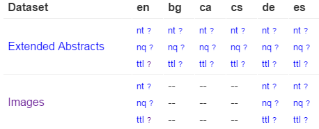
For example, images (links from DBpedia resources to Commons images) were missing fo BG. But they are important for bg.dbpedia, we took care to generate them.
A rather unique feature of DBpedia is DBpedia Live. It can provide RDF updates tracking the minutely edits on Wikipedia, Wikipedia infoboxes, and the Mapping wiki too. A stream of changes is generated and a Synchronization Tool is provided, which makes it easier to deploy a continuously updating RDF server.
2.3.6 DBpedia Loaded Languages
The datasets loaded on dbpedia.org include:
- 27 en files: article_categories category_labels disambiguations external_links freebase_links geo_coordinates geonames_links_en homepages images infobox_properties infobox_property_definitions instance_types instance_types_heuristic interlanguage_links_chapters iri_same_as_uri labels long_abstracts mappingbased_properties_cleaned page_ids persondata redirects_transitive revision_ids revision_uris short_abstracts skos_categories specific_mappingbased_properties wikipedia_links
- labels, short and long abstracts in the following additional 11 languages:
- ar, de, es, fr, it, ja, nl, pl, pt, ru, zh
- 37 linkset files to external datasets, including opencyc, umbel, yago
Names found in a language edition are not necessarily limited to that language.
Unfortunately DBpedia lang tags on fields other than rdfs:label are sometimes missing or unreliable. The reason is that some national mappings don't specify a language tag adequately.
2.3.7 DBpedia sameAs
Just like Wikipedia, DBpedia has different language editions. The inter-language links generate owl:sameAs statements across the editions. Let's try this query on http://dbpedia.org/sparql:
select * {dbpedia:Lucas_Cranach_the_Elder owl:sameAs ?x}
Note: although sameAs is supposed to be symmetric (actually an equivalence), this returns more results than the following query:
select * {?x owl:sameAs dbpedia:Lucas_Cranach_the_Elder}
This returns results like
http://rdf.freebase.com/ns/m.0kqp0 http://wikidata.org/entity/Q191748 http://wikidata.dbpedia.org/resource/Q191748 http://yago-knowledge.org/resource/Lucas_Cranach_the_Elder http://sw.cyc.com/concept/Mx4rvXh1w5wpEbGdrcN5Y29ycA http://af.dbpedia.org/resource/Lucas_Cranach_die_Ouere http://arz.dbpedia.org/resource/لوكاس_كراناك_الاكبر http://az.dbpedia.org/resource/Lukas_Kranax_(böyük) http://be.dbpedia.org/resource/Лукас_Кранах_Старэйшы http://be_x_old.dbpedia.org/resource/Люкас_Кранах_Старэйшы http://bg.dbpedia.org/resource/Лукас_Кранах_Стари
See ./dbpedia-sameas.txt for the full set of owl:sameAs for Cranach.
- The first few are links to Freebase, Wikidata (one correct URL and another "bastardized" by DBpedia), Yago Knowledge 2.7 and Open Cyc
- The rest are the interlanguage links.
The sameAs do not return extra data on http://dbpedia.org, e.g.:
select * {<http://de.dbpedia.org/resource/Lucas_Cranach_der_Ältere> ?p ?o} select * {<http://bg.dbpedia.org/resource/Лукас_Кранах_Стари> ?p ?o}
The labels and abstracts in the 11 additional languages are attached to the en URLs.
2.3.8 Wikipedia Redirects
Wikipedia redirect page goes to the target of the redirect. e.g. http://en.wikipedia.org/wiki/Cranach,_Lucas_the_Elder goes to the page about Cranach. A redirect may point to another redirect, but the DBpedia extractor chases all redirects to their ultimate target.
- DBpedia implements a similar redirect: http://dbpedia.org/resource/Cranach,_Lucas_the_Elder goes to the DBpedia resource/page about Cranach
However, DBpedia also includes statements that we can use:
select * {?x dbpedia-owl:wikiPageRedirects+ dbpedia:Lucas_Cranach_the_Elder}
returns all EN redirects for Cranach, which are:
http://dbpedia.org/resource/Cranach,_Lucas_the_Elder http://dbpedia.org/resource/Cranach_the_Elder http://dbpedia.org/resource/Lucas,_the_Elder_Cranach http://dbpedia.org/resource/Lucas_Cranach,_Sr. http://dbpedia.org/resource/Lucas_Cranach_der_%C3%84ltere http://dbpedia.org/resource/Lucas_Cranach_der_Aeltere http://dbpedia.org/resource/Lucas_Cranach_der_Altere http://dbpedia.org/resource/Lucas_Cranach_the_elder http://dbpedia.org/resource/Lucas_Muller http://dbpedia.org/resource/Lucas_the_Elder_Cranach http://dbpedia.org/resource/Lucius_Cranach_the_Elder http://dbpedia.org/resource/Lucius_Cranach_the_elder
Let's check the first one:
describe <http://dbpedia.org/resource/Cranach,_Lucas_the_Elder>
It returns a number of statements, of which the most important are:
<http://dbpedia.org/resource/Cranach,_Lucas_the_Elder> rdfs:label "Cranach, Lucas the Elder"@en . <http://dbpedia.org/resource/Cranach,_Lucas_the_Elder> dbpedia-owl:wikiPageRedirects dbpedia:Lucas_Cranach_the_Elder ;
Not all redirects provide alternative names for an entity (e.g. https://en.wikipedia.org/wiki/God_does_not_play_dice goes to the page Albert_Einstein, although this is something he said, not an alternative name for him). But most provide alternative names, so we can use them:
select ?x {[] dbpedia-owl:wikiPageRedirects <http://dbpedia.org/resource/Lucas_Cranach_the_Elder>;
rdfs:label ?x}
Because redirects are resolved to the ultimate target, we don't need to use a property path "+" (Kleene closure)
2.3.9 DBpedia Names
Different editions use different raw properties for names. A lot of them but not all are mapped to standard properties, because name properties are not always used consistently across DBpedia mappings. We explored the different name properties on en, fr, de DBpedia and came up with a query like this:
PREFIX foaf: <http://xmlns.com/foaf/0.1/> prefix dbo: <http://dbpedia.org/ontology/> prefix prop: <http://dbpedia.org/property/> prefix prop-de: <http://de.dbpedia.org/property/> prefix prop-fr: <http://fr.dbpedia.org/property/> select ?x ?p ?n { {?x dbo:wikiPageRedirects <http://dbpedia.org/resource/Lucas_Cranach_the_Elder>; rdfs:label ?n} union {<http://dbpedia.org/resource/Lucas_Cranach_the_Elder> ?p ?n. filter (?p in ( foaf:name, foaf:givenName, foaf:surname, foaf:familyName, rdfs:label, skos:prefLabel, skos:altLabel, dbo:birthName, prop:birthName, prop:name, prop:title, prop-de:name, prop-de:alternativnamen, prop-fr:nom, prop-fr:commonsTitre, prop-fr:nomDeNaissance, ))}} order by ?x ?p ?n
Note: unfortunately some DBpedia endpoints (e.g. Italy) don't support SPARQL 1.1.
Using this query across several national DBpedias (or a variant with sameAs on the LOD Cache 2.9), we collected 43 names for Cranach: ./cranach-dbpedia.txt
2.3.10 DBpedia Name Mapping
Mapped name properties include:
foaf:name, foaf:givenName, foaf:surname, foaf:familyName, rdfs:label, skos:prefLabel, skos:altLabel, dbo:birthName
You may wonder why do we need "raw" properties like these:
prop:birthName, prop:name, prop:title, prop-de:name, prop-de:alternativnamen, prop-fr:nom, prop-fr:commonsTitre, prop-fr:nomDeNaissance
The answer is that some templates take care to map all name properties, but others don't. Here we find people with the raw property prop:birthName that don't have the mapped property dbo:birthName
prefix dbo: <http://dbpedia.org/ontology/> prefix prop: <http://dbpedia.org/property/> select * { ?x prop:birthName ?n filter (lang(?n)="en" && !(str(?n) in ("?", "???", "Unknown", "unknown")) && not exists {?x dbo:birthName ?n})}
- The raw property grabs anything it finds in the template field. If you remove the condition
lang(?n)you'll see all kinds of junk, from dates to families. - language tags are fixed to en (by default), so are not reliable. e.g. "Никола́й Ива́нович Буха́рин"@en is in Russian not English
2.4 VIAF
VIAF is a large-scale collaboration of national libraries and OCLC to produce a Virtual International Authority File. As of Dec 2014, VIAF has 35 contributing institutions (9 through the LCC NACO) and 9 contributors in test (including ISNI, Wikipedia, Perseus).
2.4.1 VIAF Algorithms
VIAF uses sophisticated matching and clustering algorithms [3] to match named entities across name authorities. These include people, organizations, conferences, places, works, expressions (e.g. a certain edition or translation of a work), subject headings, etc. VIAF is somewhat conservative in not making possible matches that are not warranted by sufficient information.
VIAF cluster IDs are relatively stable, but when monthly updates are received from the contributing institutions, it is possible that an authority record is reassigned to another VIAF cluster, or two VIAF clusters are merged, or a VIAF ID is abandoned. Nevertheless VIAF makes everything possible to preserve IDs:
- when a new cluster is formed, it first seeks to reuse an abandoned ID that was previously used for some of the records in the cluster
- when an ID is abandoned, leaves a redirect to the surviving cluster that holds most records from the abandoned cluster
2.4.2 VIAF Counts
Recent VIAF counts are provided in the 2014 Annual Report. The number of VIAF clusters is as follows (also see 4 for breakdown per VIAF member):
- Personal: 35,163,929
- Corporate/conferences: 5,425,304
- Geographic: 416,316
- Work: 1,685,745
- Expression: 287,211
Also interesting are the numbers on p6, in particular:
- Wikipedia/Wikidata: 1,135,025 Person records imported, of which 37% are matched
To appreciate the size, we reproduce an image from [6] that compares VIAF with Wikidata (thus indirectly DBpedia):
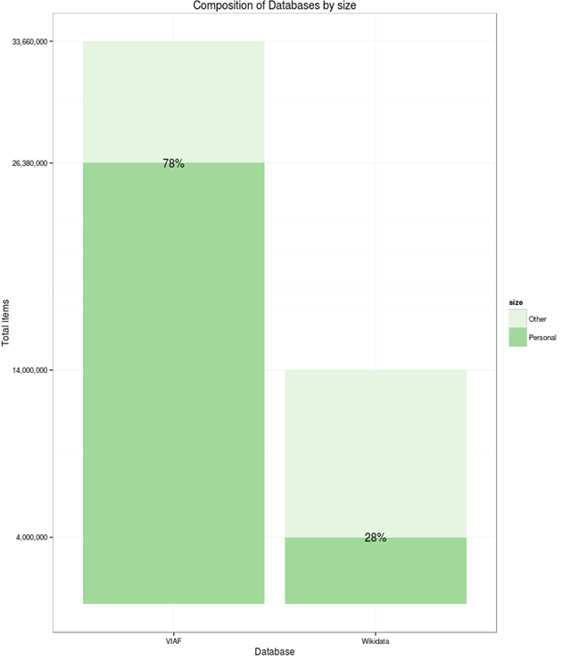
Please compare to 2.1.4, which counts "human" items in Wikidata as 2.7M.
- This is lower than on the graphic, but higher than the number on p6 (how were these 1.1M records selected?)
2.4.3 VIAF Access
VIAF has a basic search at http://viaf.org/, and an advanced (SRU-based) search at http://viaf.org/viaf/search/.
If you search for "Personal name: Lucas Cranach" you may find:
- (top) a main cluster http://viaf.org/viaf/49268177 that carries a lot of info and is the result of matching many source records (including from DNB)
- (middle) 31 persons who are either related to Cranach (e.g. Maximilian I Holy Roman Emperor, painted by Cranach in 1509), or share a name
- (bottom) two stand-alone (singleton) clusters (coming from DNB):
- http://viaf.org/viaf/308208350 from DBN: "Cranach, Lucas d. Ä. oder d. J." (The Elder or The Younger), to be used for works with unclear attribution to the father or the son
- http://viaf.org/viaf/238031633 from DNB: "Cranach, Lucas" marked (undifferentiated) (sparse), for which there is too little info to warrant a match.
- http://viaf.org/viaf/96020412 from ULAN: which has this note: "Given that the name is rather common, it is uncertain whether or not this artist is identifiable as one of the two famous artists named "Lucas Cranach."
VIAF is conservative in matching: even though the names of these clusters match, there are no years, so VIAF does not cluster them.
The main Cranach cluster has 44 Works, several download formats in Record Views, and 71 names: ./cranach-VIAF.txt.
The RDF is at http://viaf.org/viaf/49268177/rdf.xml and is available here in Turtle for easier understanding: ./cranach-viaf.ttl. It follows a dual approach as explained in [7] sec 3.3. An abbreviated version follows:
<http://viaf.org/viaf/49268177/> a foaf:Document ; void:inDataset <http://viaf.org/viaf/data> ; foaf:primaryTopic <http://viaf.org/viaf/49268177> . <http://viaf.org/viaf/49268177> a schema:Person ; schema:alternateName "Sunder-Maler, Lucas" , "Müller, Lukas" ...; schema:birthDate "1472-10-04" ; schema:deathDate "1553-10-16" ; schema:description "German painter, draftsman, and printmaker, 1472-1553" ; schema:familyName "קראנאך" , "Cranach" , "Кранах" ; schema:givenName "Лукас" , "Lucas" , "לוקאס האב" , "Lucas the Elder (studio of)" ...; schema:name "Кранах, Лукас" , "קראנאך, לוקאס, האב (סדנת)" , "Cranach, Lucas, the Elder" ...; schema:sameAs <http://data.bnf.fr/ark:/12148/cb12176451h#foaf:Person> , <http://dbpedia.org/resource/Lucas_Cranach_the_Elder> , <http://d-nb.info/gnd/118522582> , <http://www.idref.fr/028710010/id> , <http://libris.kb.se/resource/auth/182422> ; foaf:isPrimaryTopicOf <http://en.wikipedia.org/wiki/Lucas_Cranach_the_Elder> . <http://viaf.org/viaf/sourceID/BNF%7C12176451#skos:Concept> a skos:Concept ; rdfs:seeAlso <http://catalogue.bnf.fr/ark:/12148/cb12176451h> ; skos:altLabel "Cranach der Ältere Lucas 1472-1553" , "Cranach Lukas 1472-1553" , "Cranach l'ancien Lucas 1472-1553"...; skos:exactMatch <http://data.bnf.fr/ark:/12148/cb12176451h> ; skos:inScheme <http://viaf.org/authorityScheme/BNF> ; skos:prefLabel "Cranach, Lucas, 1472-1553." ; foaf:focus <http://viaf.org/viaf/49268177> .
- The central node is a schema:Person, having birth/death dates, names, anternate names, even given/family names (though "studio of" is hardly a given name)
- The Person is declared owl:sameAs all coresponding nodes in contributing organizations that have an appropriate type (e.g. foaf:Person for BNF, dbo:Person for DBPedia)
- There are two documents (the VIAF page and Wikipedia page) that point to the Person using foaf:primaryTopic.
- There is a skos:Concept for each of the contributor nodes (members of the cluster) that points to the Person using foaf:focus
- These Concepts hold the prefLabel and altLabels as determined by the contributing institution
- VIAF doesn't have language tags, which is an omission
Overall, this structure is perfectly correct and provides both a lot of names, and also a lot of links
2.4.4 VIAF Download
VIAF provides monthly dumps at http://viaf.org/viaf/data/ (this file is RDFa, i.e. both human and machine readable description). The following files are of interest to us, of which we analyze the first and load the second to a repository:
| file | gz | description |
|---|---|---|
| links.txt+ | 0.4G | coreference VIAF->contributor id, including external links such as Wikipedia |
| clusters-rdf.nt+ | 8.3G | one line per statement, all statements for each cluster |
| clusters-rdf.xml | 4.2G | one line per cluster, containing RDF like the above Cranach link |
| persist-rdf.xml | 0.09G | redirections between VIAF clusters. Happens when a cluster is split or merged, see 2.4.1 |
The average compression is 4.8x. The files are pretty large, but manageable (unzipped: links.txt 2Gb, clusters-rdf.nt 40G)
2.5 ISNI
ISNI (International Standard Name Identifier) is an international cooperation that on one hand feeds from VIAF, and on the other hand caters to easy institutional registration of modern authors (whereas ORCID allows easy personal registration).
[2] explains well the similarities and differences between ISNI and VIAF.
The ISNI record for Cranach is http://isni.org/isni/0000000121319721 and has 51 names: ./cranach-ISNI.txt. An "almost RDF" file is available at http://isni.org/isni/0000000121319721.rdf but unfortunately this is not valid RDF:
- It starts with a custom element <isni:PersonPublicIdentity>
- It references a non-existing http://isni.org/ontology
The ISNI names are a subset of the VIAF names, so the conclusion is that we can ignore ISNI.
2.6 Getty ULAN
The Union List of Artist Names (ULAN) of the Getty Research Institute is a well-known personal name thesaurus.
- ULAN publication as LOD is expected in Mar 2015, similar to the AAT and TGN publications at http://vocab.getty.edu/sparql
The Cranach record is at http://vocab.getty.edu/ulan/500115364 and has 25 names: ./cranach-ULAN.txt.
- ULAN is a relatively small authority (230k records)
- ULAN names are subsumed by VIAF since ULAN is a fully-fledged contributor to VIAF
- However, ULAN is carefully curated, every name/fact has a documented source, and it includes valuable person information such as roles (types), relations (e.g. influenced, student), life events. These can be useful for disambiguation
2.7 Yago Knowledge
Yago provides an important contribution to DBpedia in the form of additional instance types, and integration to Wordnet. While DBpedia instance types are determined by the applied templates, Yago types are determined by NLP over the Wikipedia categories.
Yago has the same coverage as DBpedia (it doesn't have independently developed entries).
The Yago record for Cranach is at http://yago-knowledge.org/resource/Lucas_Cranach_the_Elder
- It's in standard NTriples format (text/plain)
- There are 37 names: cranach-yago.txt
- Most don't have language tags, except 4 (de, lv, pl, simple; the latter doesn't conform to RDF/IANA rules)
2.8 British Museum
The British Museum LOD collection (http://collection.britishmuseum.org) uses a number of thesauri (about 40).
- You can see many of them in CSV format at Github
- The person-institution thesaurus has 176,461 entries, which you can download in a richer form here
The Cranach record is at http://collection.britishmuseum.org/id/person-institution/23953 and has only two names: Lucas Cranach the Elder and Cranach, Lucas. So it is not considered below
2.9 LOD Cache
The LOD Cache SPARQL endpoint http://lod.openlinksw.com/sparql by Open Link Software includes a lot of aggregated data from LOD datasets. It includes the following name sources considered above:
- Wikidata
- DBpedia: EN & FR (in full, not just labels and abstracts in foreign languages like dbpedia.org)
- The following DBpedias are not included: IT, DE
- FreeBase
Some caveats:
- Unfortunately the endpoint is quite unreliable. The SPARQL Endpoint Status service showed 84.6% availability for the month of Nov 2014. At 2014-12-02 11:18 the endpoint returned this error:
Virtuoso 08C01 Error CL...: Cluster could not connect to host 2 oplbfc3:22202 error 111
- The update rate is unclear, so one should be careful to evaluate whether all data is present by consulting the original sources
We run a query which is a combination of 2.3.7, 2.3.8 and 2.3.9. The result is a table ./from-LOD-cache.tdv with 216 rows. But let's check the unique labels only (there's 88) and compare to Wikipedia+VIAF
perl -pe '$_=(split/\t/)[2]; s{"(.*)"@?[\w-]*}{$1}; s{[,.]}{}g' from-LOD-cache.tdv |sort|uniq > from-LOD-uniq.txt
cat cranach-wikidata.txt cranach-VIAF.txt | sort | uniq > Wikidata-VIAF-uniq.txt
- There are 146 names in ./Wikidata-VIAF-uniq.txt and 83 in ./from-LOD-uniq.txt
- There are only 4 unique contributions in ./from-LOD-uniq.txt:
Cranach the Elder Lucas Cranach "el Vell" Lucas Cranach "el Viejo" Lucas Maler
Overall, for any production work it's recommended to load the desired datasets to a local repository. Otherwise continuity of service cannot be guaranteed.
3 Comparing Sources
After fetching the name forms from all sources, we want to analyze overlaps and unique contributions. So we tabulate them to a common file, using common Unix tools (perl, join, uniq, sort) and Excel
- We concatenate all files from different sources, uniquify and sort, obtaining 155 names
- Hacky note: if working on Windows (e.g. using Cygwin), convert all files to Unix newlines:
conv -U *.txt - Don't use Unicode BOM, since sort and join don't like it
- We do the tabulation with a series of commands like this (in ./cranach-table.sh)
perl -pe 's{(.+)}{$1|1}' Cranach-VIAF.txt \ | join -t '|' -a1 -e0 -o1.1,1.2,1.3,1.4,1.5,2.2 Cranach4.txt - > Cranach5.txt
- The perl command adds "|1" to the end of each line. "1" indicates there is a value, and "|" is a record separator
- join -t sets the tab separator, -a1 does a left outer join, -e0 replaces missing values (rows from the right line) with "0".
- -o1.1,1.2,1.3,1.4,1.5,2.2 sets the output format: all 5 columns from the left file (into which 4 inputs have already been merged), then the "0"/"1" indicator from the right file
3.1 Source Counts
The merged table is opened with Excel, where some calculations and conditional formatting are added: ./cranach-table.xlsx.
- Count is the number of names per dataset
- Unique is the unique contributions, which are highlighted in red. We can see that VIAF and Wikidata have most uniques
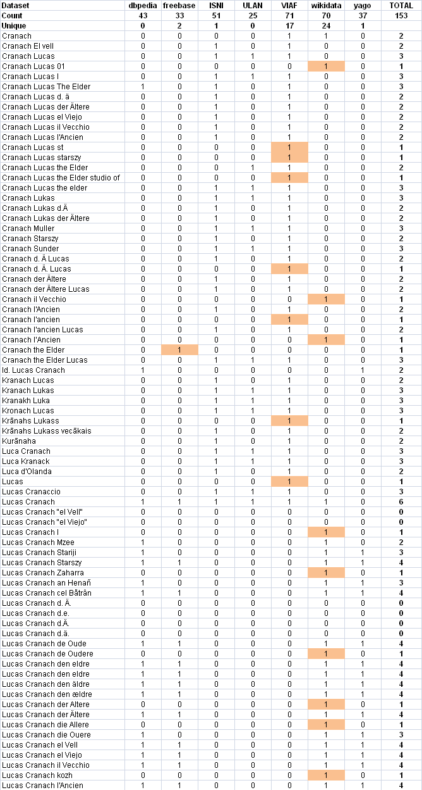
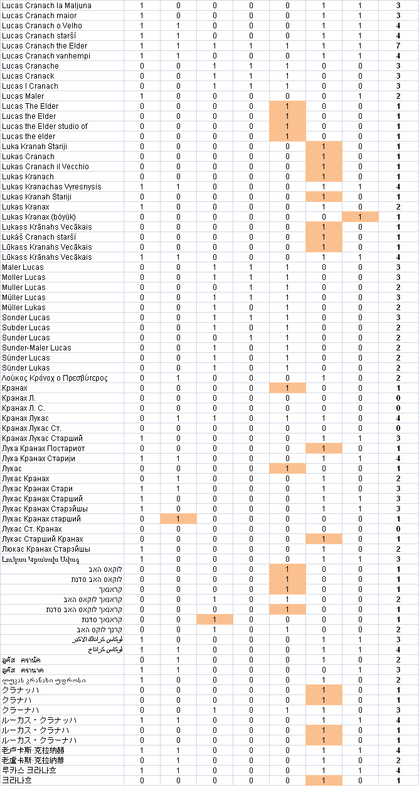
3.2 Venn Diagram
It's hard to figure out the correlations between sets from this table, so we decided to make a Venn diagram. Most Venn libraries can work with 3 or maximum 4 sets, but the excellent venn.js can work with any number of sets.
Using the Algorithm::Combinatorics perl module, we hacked a script ./cranach-venn.pl that counts the cardinalities of all set intersections (potentially 2^7=128). We formatted the result as ./cranach-venn.jsonp, following an example in venn.js:
perl cranach-venn.pl cranach-table.txt > cranach-venn.jsonp
The result is ./cranach-venn.html.
- We strongly recommend that you play with the interactive version ./cranach-venn.html, since it highlights intersections and reveals their cardinalities, allowing better understanding of the arrangement.
- The diagram is approximate, e.g. ULAN is wholly within VIAF: if you try to point out the little sliver ULAN\VIAF, you'll discover it has cardinality 0. But it's quite accurate!
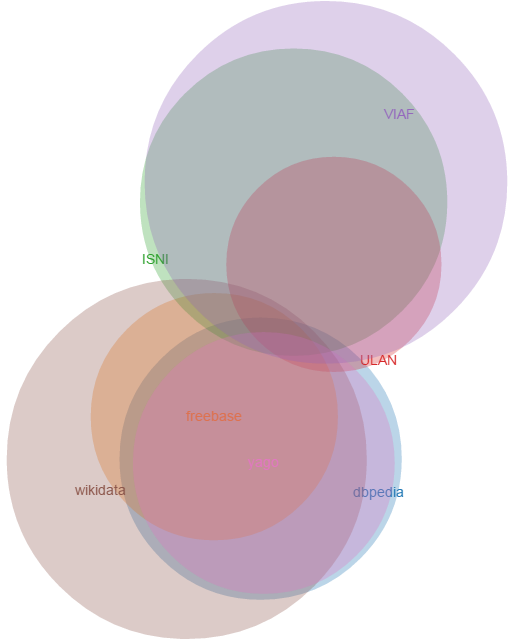
Notes:
- A striking revelation is that the 3 "library-tradition" datasets (VIAF, ISNI, ULAN) and the 4 "LOD-tradition datasets" (Wikidata, DBpedia, Freebase, Yago) have almost nothing in common: only 5 names. Library datasets contribute many permutations and qualifiers (e.g. "der Altere" vs "d A"), while LOD datasets contribute many languages.
- The datasets in each "tradition" are very similar. The reason is obvious: ISNI and ULAN are fully-fledged contributors in VIAF, so VIAF subsumes them. As for the LOD datasets, each has copied from the others liberally. DBpedia appears as a subset of Wikidata only because we have selected only en, de, fr names (See 2.3.9). Yago covers the en DBpedia, and Freebase doesn't contribute many unique names either.
- The circles represent number of names for this single example, not dataset coverage. Remember that VIAF is some 12x bigger than Wikidata, see 2.4.2
- We should focus on Wikidata and VIAF. If we drop DBpedia, Freebase, Yago we'll lose only 4 names, and if we drop ISNI, ULAN we'll lose only 1 name.
4 Coreferencing
Coreferencing is the alignment of Authority databases, typically by aggregation of identifiers from one database to another. An example can be seen best on the Reasonator page for Cranach (the right side). (We use this data in the next section.) Each coreference ID is also a link. Of course, whenever the target Authority has an RDF representation, the links are also machine-navigable.
As we can surmise from the previous section, the two currently most-prominent Person Authorities (hubs) are VIAF and Wikidata, which is also confirmed by [6].
- The benefits of coreferencing are significant for Authority providers, as it allows cross-checking, adding missing information, and leveraging independent work done in other datasets
- There are also benefits of coreferencing for consumers such as Europeana enrichment: significantly enlarged coverage (union of two datasets) while avoiding the danger of duplicate entities; increasing the number of names and extra characteristics for individual objects.
4.1 VIAF Coreferencing
VIAF coreferencing is performed across the contributing datasets by sophisticated algorithms, see 2.4.1. [4] describes how VIAF -> Wikipedia matchings were imported automatically to Wikidata by a "bot".
We did a recent count of VIAF correlations using the Links file. These are links from VIAF to other authorities, which allows us to surmise the matched item counts for each dataset as well.
- xR and xA are auxiliary authorities developed by OCLC, which serve as sort of "control files" to take care of difficult cases
| count | code | dataset |
|---|---|---|
| 320898 | BAV | Vatican |
| 73421 | BIBSYS | Norway |
| 144299 | BNC | Catalunya |
| 562244 | BNE | Spain |
| 2036493 | BNF | France (BnF) |
| 101500 | DBC | Denmark (DBC) |
| 10531522 | DNB | Germany |
| 37004 | EGAXA | Egypt |
| 169028 | ICCU | Italy |
| 9953 | IMAGINE | Israel |
| 7655649 | ISNI | ISNI |
| 232327 | JPG | Getty (ULAN) |
| 689827 | LAC | Canada |
| 9154093 | LC | LC (NACO) |
| 158515 | LNB | Latvia |
| 11000 | LNL | Lebanon |
| 1032862 | NDL | Japan (NDL) |
| 743215 | NKC | Czech |
| 1016708 | NLA | Australia |
| 408 | NLB | Singapore |
| 570840 | NLI | Israel |
| 844024 | NLP | Poland (Nat lib) |
| 473518 | NSK | Croatia |
| 33727 | NSZL | Hungary |
| 2555033 | NTA | Netherlands |
| 1351105 | NUKAT | Poland (NUKAT) |
| 1228 | PERSEUS | Perseus |
| 373078 | PTBNP | Portugal |
| 220304 | RERO | Swiss (RERO) |
| 997 | RSL | Russia |
| 187073 | SELIBR | Sweden |
| 209 | SRP | Syriac |
| 2508374 | SUDOC | France (Sudoc) |
| 45633 | SWNL | Swiss (Nat lib) |
| 5723 | VLACC | Belgium (Flemish) |
| 377650 | WKP | Wikipedia |
| 267 | XA | xA OCLC file |
| 2018647 | XR | xR OCLC file |
| 27684634 | VIAF | TOTAL |
4.2 VIAF vs Wikidata Coreferencing
Now let's see some coreferencing action between the two hubs:
- We already saw the Wikidata coreference id's on the Reasonator page for Cranach
- VIAF has an API "justlinks" to return only the coreferences, e.g. for Cranach: http://viaf.org/viaf/49268177/justlinks.json (Note: 4 of the fields were URLs, we left just the ID for easier comparison)
| VIAF | id in VIAF | Wikidata | id in Wikidata |
|---|---|---|---|
| viafID | 49268177 | VIAF | 49268177 |
| BAV | ADV10197613 | ||
| BNC | .a10853637 | ||
| BNE | XX907273 | ||
| BNF | cb12176451h | BNF | 12176451h |
| DNB | 118522582 | GND | 118522582 |
| ISNI | 0000000121319721 | ISNI | 0000 0001 2131 9721 |
| JPG | 500115364 | ULAN | 500115364 |
| LC | n50020861 | LCCN | n50020861 |
| LNB | LNC10-000002573 | ||
| NDL | 00436834 | ||
| NKC | jn20000700335 | ||
| NLA | 000035031951 | ||
| NLI | 000035532,001445575,001448179 | ||
| NLP | a16828161 | ||
| NTA | 068435312 | NTA PPN | 068435312 |
| NUKAT | vtls000190728 | ||
| SELIBR | 182422 | ||
| SUDOC | 028710010 | ||
| WKP | Lucas_Cranach_the_Elder | Many Wikipedias | |
| IMAGINE | T7238,T267474 | ||
| Cantic | a10853637 | ||
| Commons Creator | Lucas Cranach (I) | ||
| Commons category | Lucas Cranach d. Ä. | ||
| Freebase | /m/0kqp0 | ||
| RKDartists | 18978 | ||
| SIMBAD | CRANACH, Lucas the Elder | ||
| Your Paintings | lucas-the-elder-cranach |
As you can see, there are a number of "gaps" in each hub that could be filled out from the other hub.
- e.g. RKDartists is an important Authority that does not yet participate in VIAF. There are already 21760 RKDartist id's on Wikidata. These could be imported to VIAF for free!
- In this case each hub has the ID of the other hub. But this need not always be the case:
- Wikidata has 504736 items with VIAF id
- Wikidata has 567240 items with VIAF or GND
- Since all GND items are likely to be in VIAF, this shows that in Wikidata, 62504 items with GND id don't have a VIAF id. We can assign VIAF ids to these easily!
- We can fill out missing data (e.g. birth/death date/place) from one hub to the other
A WikiProject Authority Control was recently proposed to coordinate such developments
4.3 Wikidata Coreferencing with Mix-n-Match
Mix-n-Match is a tool for matching Wikidata items to authority databases, by Magnus Manske who also created Reasonator. In this way the authority databases can be coreferenced, and thereon linked to Wikipedia. It has (simple) automatic matching based on names and dates, followed by crowd-sourced edits. [8] and [9] describe using the tool to coreference the Oxford Dictionary of National Biography. Some examples follow:
- List of datasets (catalogs) subject to matching with statistics
- Matching of ULAN
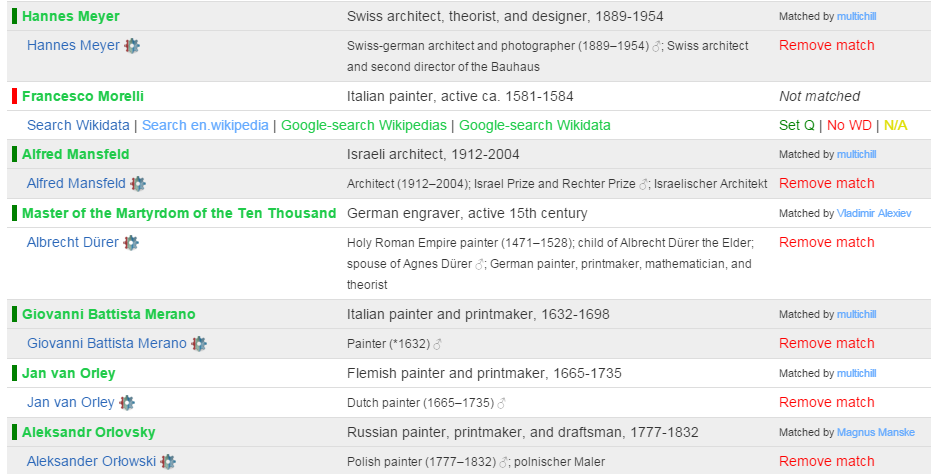
- Matching in "game" mode: 1 record at a time for casual users
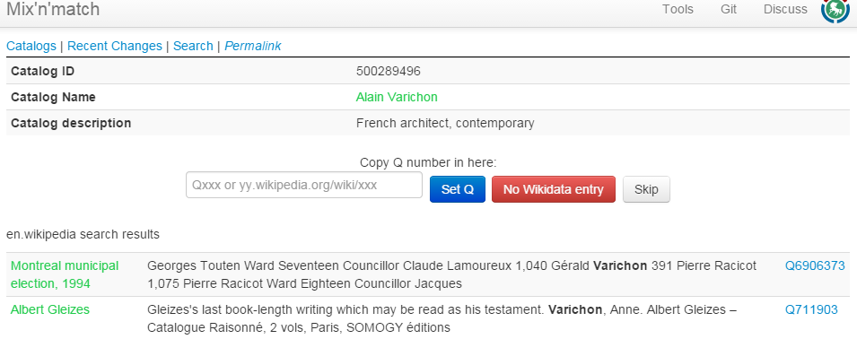
4.4 Downloading Coreferences from Mix-n-Match
- Download TDV of matches for a given catalog (ULAN):
Download BEACON coreference file from wikidata. BEACON is a simple tuple or triple format. The query parameters correspond to the result fields as follows: source->PREFIX, prop-TARGET
- VIAF-wikidata-ULAN:
#PREFIX: https://viaf.org/viaf/ #TARGET: http://vocab.getty.edu/ulan/ 100001869|Q29418|500008217
- ULAN-wikidata-VIAF:
#PREFIX: http://vocab.getty.edu/ulan/ #TARGET: https://viaf.org/viaf/ 500000006|Q123948|20472726
- RKDartists-wikidata-ULAN: no problem, even though RKDartists is not yet in VIAF!
#PREFIX: https://rkd.nl/explore/artists/ #TARGET: http://vocab.getty.edu/ulan/ 1|Q3651930|500067169 10008|Q715909|500023946 100086|Q3161825|500068086 100140|Q3383669|500126269
4.5 Wikidata Authority Identifiers
A prerequisite for coreferencing is to register authority files as Wikidata items, and their IDs as Wikidata properties (carrying annotation "Wikidata property for authority control"). All kinds of international and national authority files are already registered (e.g. see a big list on Wikisource or a sampling on Wikisouce), and new ones are proposed daily. These identifiers are used in items and articles, and displayed as a visually striking Authority Control box
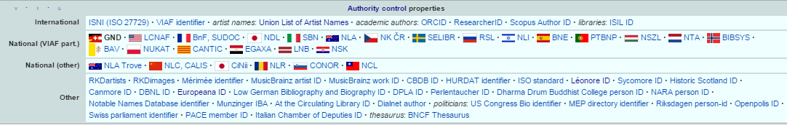
4.6 British Museum Coreferencing
The BM thesauri are not coreferenced. Since the BM has published 2.5M objects as LOD, it would be quite valuable to coreference the BM thesauri. A proposal to do this on Wikidata using the TDV export (see 2.8) was recently made, and coreferencing has already started:
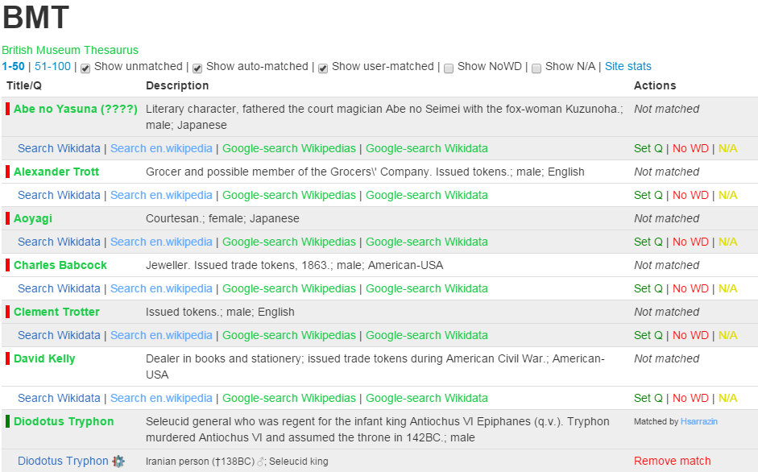
4.7 Wikidata Correlation Ids on DBpedia
Some correlations are already available on the DBpedia or LOD Cache endpoints
PREFIX wikidata: <http://www.wikidata.org/entity/> prefix dbo: <http://dbpedia.org/ontology/> prefix prop-de: <http://de.dbpedia.org/property/> select ?p ?n { {<http://dbpedia.org/resource/Lucas_Cranach_the_Elder> ?p ?n} union {?x owl:sameAs <http://dbpedia.org/resource/Lucas_Cranach_the_Elder>; ?p ?n} filter (?p in ( wikidata:P214, dbo:viafid, dbo:viafId, # VIAF wikidata:P213, # ISNI wikidata:P646, # FreeBase wikidata:P244, prop-de:lccn, # US LCNAF=LCCN wikidata:P245, # US ULAN wikidata:P227, dbo:individualisedGnd, # DE GND wikidata:P268, # FR BnF wikidata:P650, # NL RKDartists wikidata:P1273 # CAT CANTIC ))}
Remember that in DBpedia the entity URL is changed to http://wikidata.dbpedia.org/resource/Q191748, and is declared owl:sameAs the DBpedia URL. We use sameAs instead of this "bastardized" wikidata URL
http://live.dbpedia.org/sparql includes more up to date information. Let's count the number of correlations
prefix wikidata: <http://www.wikidata.org/entity/> prefix dbo: <http://dbpedia.org/ontology/> prefix prop-de: <http://de.dbpedia.org/property/> select ?p ?t (count(*) as ?c) { ?x ?p ?y filter ( ?p in ( wikidata:P214, dbo:viafid, dbo:viafId, # VIAF wikidata:P213, # ISNI wikidata:P646, # FreeBase wikidata:P244, prop-de:lccn, # US LCNAF=LCCN wikidata:P245, # US ULAN wikidata:P227, dbo:individualisedPnd, # DE GND wikidata:P268, # FR BnF wikidata:P650, # NL RKD wikidata:P1273 # CAT CANTIC )) optional {?x a ?t1 filter (?t1 in (dbo:Person, dbo:Organisation))} optional {?x a ?t2 filter (?t2 in (dbo:Agent))} bind (coalesce (?t1,?t2) as ?t) } group by ?p ?t order by desc(?c)
| p | t | c |
|---|---|---|
| dbo:viafId | dbo:Person | 262469 |
| dbo:viafId | dno:Agent | 1227 |
| dbo:viafId | dbo:Organisation | 255 |
| dbo:individualisedPnd | 3 | |
| dbo:individualisedPnd | dbo:Person | 3 |
Note: http://dbpedia.org/sparql returns only 16k
4.8 Finding Errors in Authorities through Wikipedia/Wikidata
The power of the crowd can help maintain authority control files by finding errors and researching cases where records should be merged or split. e.g. VIAF errors on Wikipedia has lists in the following categories:
- 1.1 Wikipedia article is not the same as the VIAF identity
- 1.2 Two or more VIAF identities for the same article
- 1.3 VIAF merges different identities (into one cluster)
- 1.4 Parallel VIAF clusters for one identity
- 1.5 Wikipedia link inside VIAF is out of date
- 1.6 Articles about multiple people assigned the VIAF identity for one of them
- 1.7 Other errors
Wikidata provides automatic integrity checking, e.g. no two items should have the same id, one item should have no more than one id, etc).
- The VIAF id constraint violations report lists some 3500 items that should be investigated.
- For example, Q192187 Communist Party of the Russian Federation (Gennady Zyuganov) had 6 VIAF id's? A quick investigation in VIAF shows that only 146251554 is correct, whereas the rest represent subunits and conferences:
- 233350017: a subunit: S︡entralʹnyĭ komitet. Otdel po informat︠s︡ionno-analiticheskoĭ rabote i provedenii︠a︡ vybornykh kompaniĭ
- 300667542: a conference: S︡entralʹnyĭ komitet: 13th Plenum 2012
- A similar investigation was done for ULAN resulting in:
- 9 candidates for merging in ULAN. Getty have already acted upon them
- 25 candidates for merging in Wikidata, for example 500003014: Baldassare Estense (Q804745) vs Baldassare D' Este (Q18507908)
5 Conclusions
We can draw the following conclusions from this analysis:
- The best datasets to use for Person enrichment (NER) are VIAF and Wikidata
- The best approach is loading them to a local repository in order to ensure levels of service
- Names and other attributes (e.g. years, descriptions) are extracted with agreed queries, producing dynamic gazetteers
- For Wikidata we load the files
terms, simple-statements, properties, taxonomy, instancesand only enwikisitelinksfor a total of maximum 315M triples.- We skip redundant triples, see 2.1.5: rdfs:label, schema:name. We also don't load ontologies, to avoid the inference of rdfs:label from skos:prefLabel or skos:altLabel
- We should talk to the Wikidata developers to also emit one statement (the preferred or first in order) per item-property slot, even if the statement is qualified
- For VIAF we load the file clusters-rdf.nt, about 300M triples
- We align the two datasets by coreference IDs
- Participating in 4 initiatives is beneficial for the Europeana community, and the wider CH and LOD communities. For example, a first initiative could be to cross-check VIAF Wikipedia links against Wikidata VIAF links
6 References
- Jens Lehmann, Robert Isele, Max Jakob, Anja Jentzsch, Dimitris Kontokostas, Pablo N. Mendes, Sebastian Hellmann, Mohamed Morsey, Patrick van Kleef, Sören Auer, Christian Bizer, DBpedia - A Large-scale, Multilingual Knowledge Base Extracted from Wikipedia. Semantic Web Journal, 2013.
- Anila Angjeli, Andrew Mac Ewan and Vincent Boulet, ISNI and VIAF - Transforming ways of trustfully consolidating identities. IFLA 2014, July 2014.
- Thomas B. Hickey and Jenny A. Toves, Managing Ambiguity In VIAF, D-Lib Magazine, Volume 20, Number 7/8, July/August 2014. 10.1045/july2014-hickey
- Maximilian Klein and Alex Kyrios, VIAFbot and the Integration of Library Data on Wikipedia, Code4Lib Journal, Issue 22, 2013-10-14
- Fredo Erxleben, Michael Günther, Markus Krötzsch, Julian Mendez and Denny Vrandecic, Introducing Wikidata to the Linked Data Web, 2014
- Maximillian Klein, Authority Addicts: The New Frontier of Authority Control on Wikidata, (17 slides: pptx presentation, SlideShare). Wikimania 2013 International Wikimedia Conference, 7-11 August 2013, Hong Kong
- Vladimir Alexiev, Joan Cobb, Gregg Garcia, and Patricia Harpring. Getty Vocabularies Linked Open Data: Semantic Representation. Manual, Getty Research Institute, 2.0 edition, August 2014.
- Wikidata identifiers and the ODNB – where next?, blog, 26 November 2014
- Wikidata and identifiers – part 2, the matching process, blog, 27 November 2014